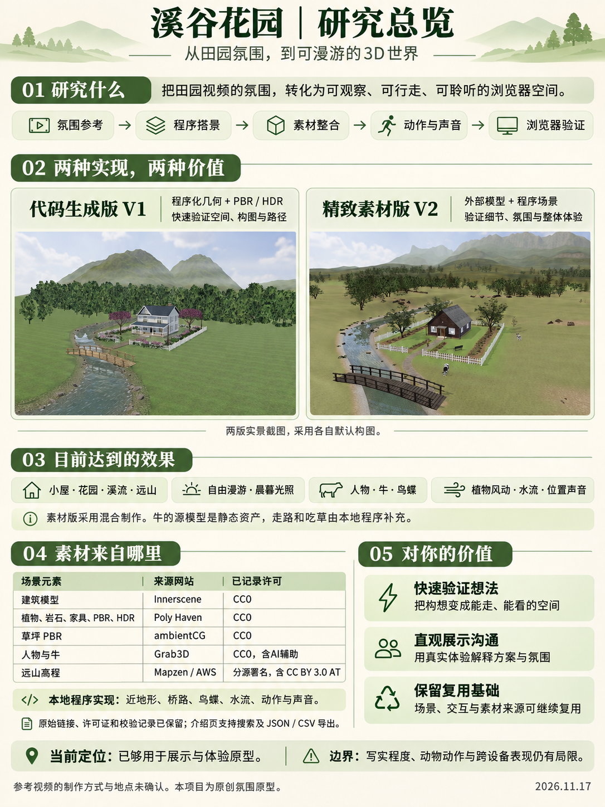

山谷中的白屋与花园
Sıradışı Dekorlar · @siradisidekor ↗
原帖封面暂未载入。可以通过下方原帖入口观看。

01 / 原参考与我们的转化
先看原帖的氛围，再看我们的实现。
下面的理解来自画面观察，制作方式仍未确认。
原帖封面暂未载入。可以通过下方原帖入口观看。
小屋与花园成为近景中心，溪流划出边界，林带和群山围合出安静的山谷。
白屋、粉色花树与密集花境形成亲近感；远山、云雾和层叠植被带来纵深。
保留主体关系与安静感，补全镜头之外的可行走地形，并让动作、风与声音形成空间反馈。
| 比较维度 | 原参考视频 | 代码版 V1 | 素材版 V2 |
|---|---|---|---|
| 呈现与视角 | 约 10 秒竖屏视频，观看原帖给定的镜头。 | 实时三维，可自由行走和环顾。 | 实时三维，可走近细节、观察生活元素。 |
| 画面与细节 | 花境、林带与雾层的画面完成度较高，作为我们的氛围目标。 | 优先建立轮廓、构图和空间关系。 | 加入模型、PBR、地形与植被层次；自然程度仍与参考有差距。 |
| 互动与反馈 | 内容随视频镜头呈现；未提供可探索的场景工程。 | 自由漫游、晨暮与基础环境声。 | 人物与牛的行为、鸟蝶、流动溪水、风动与距离声音。 |
| 制作与复用 | 制作方式、源工程和场景素材授权未确认。 | 保留程序几何规则、布局和交互代码。 | 保留资产与来源索引；本地行为和场景逻辑可继续整合。 |
| 这次验证的价值 | 提供想要靠近和停留的氛围参考。 | 把想法变成可走、可看的空间原型。 | 验证细节、自然反馈与浏览器运行之间的取舍。 |
可横向滚动查看完整对照。
以上是我们对画面与体验的观察和判断，不据此断定原视频是实拍、3D 或 AI 生成。当前演示保留了自己的建筑与空间设计，属于氛围转化原型，尚不等同于参考的视觉完成度。
02 / 两个保留版本
两版都由代码驱动。
主要区别在几何、素材来源与整合深度。
以上为本项目在内置浏览器中的实际运行截图，采用相同视窗尺寸，保留各版默认构图。
03 / 走进这片溪谷
选择一个版本，开始自由漫游。
也可以独立打开，获得更大的视野。
WASD 行走 · 拖动环顾 · 声音默认关闭
正在准备场景…
请重试，或使用独立打开入口。
精致素材版：窗内陈设、自然地表、水流与生活元素；风声、脚步和蹄声按场景变化。
尚未启动进入后点一下场景，再使用键盘或画面控件。精致素材版中，开启右上角声音按钮，靠近人物与牛可感受脚步、蹄声的距离变化。建议使用电脑和耳机。
04 / 差异与价值
选择哪条路线，取决于当前要验证什么。
保留两个版本，让变化有清楚的参照。
| 比较维度 | 代码生成版 V1 | 精致素材版 V2 |
|---|---|---|
| 空间构建 | 房屋、花木和山谷的主要几何由代码构造。 | 导入建筑、植物、扫描岩石；连续地形、水流、道路等仍由程序构造。 |
| 材质与光照 | 程序纹理结合已保留的实拍 PBR 与 HDR 天空。 | 多组 PBR 材质、细化窗户与室内布景，并补充地表接触阴影。 |
| 自然层次 | 以轮廓、色彩和主体关系建立整体氛围。 | 真实高程远山、草坡起伏、裸土、岩石、灌丛与林缘分层。 |
| 生活反馈 | 自由漫游、晨暮切换与基础环境声。 | 人物、牛、鸟蝶；落脚声、距离声向、风声与植物摆动联动。 |
| 迭代工作 | 通过规则调整形态和布局，便于快速尝试空间方案。 | 统一素材尺度、材质、动画、接地与资源分级，需要更多整合与检查。 |
| 核心价值 | 快速验证想法：空间、路径、构图与交互方向。 | 验证完整体验：近看细节、自然反馈、氛围与展示效果。 |
左右滑动，查看两个版本的对照。
这是混合制作的实时场景。建筑、植被与岩石使用外部资产；地形、水体、桥路、鸟蝶和部分行为由程序生成。人物保留源骨骼行走，牛基于静态源模型补充程序骨骼与步态。素材来源、许可文本和必要署名均随项目保留。
查看素材来源索引 ↓在可漫游空间中讨论庭院的构图、路线和氛围，从更多视角检验方案。
通过浏览器展示空间、材质、动作和声音，用于方案沟通与沉浸式体验原型。
保留场景结构、素材清单和交互方式，后续按新主题替换内容、继续验证。
05 / 我们形成的理解
视频表达氛围，漫游需要补全视角之外的地形、道路和边界。能否走近、绕看、停留，是这次原型首先验证的价值。
地面起伏、草土过渡、林缘层次、石板厚度和根部阴影共同决定自然程度。单独替换一个高精模型，无法完成整个庭院的真实感。
人物与牛要有稳定的落脚、停步和转向；溪水要有连续流向；风声与花草要共享阵风节奏。近处可察觉、远处逐渐淡去的反馈，让空间更值得停留。
06 / 一图汇总
研究目标、两版效果、来源与价值。
可以放大阅读，也可以保存原图。
07 / 素材与程序内容
按场景元素、素材名或网站查找。
原始链接、许可和本地记录集中保留。
正在读取本地来源记录…
外部来源包含模型、贴图、高程数据，以及运行与离线处理依赖。按分类展开可查看每一项。
没有找到匹配的记录。可以换一个关键词，或重置筛选查看全部分类。
来源索引暂时没有载入。可刷新页面，或通过上方 JSON / CSV 与下方原有鸣谢页查看记录。
许可按获取时记录列示。远山高程按上游数据源分别保留署名，包含 CC BY 3.0 AT，不能统称为 CC0。人物与牛的上游记录披露 AI 辅助生成；牛的源模型为静态，当前动作由本项目补充。
程序内容未单独声明素材许可，本索引没有为项目源码新增授权。源模型、贴图、数据与引擎依赖仍保留各自许可。原始记录中可继续查找下载日期、文件 URL、字节数与 SHA256。
原有素材与鸣谢页 ↗